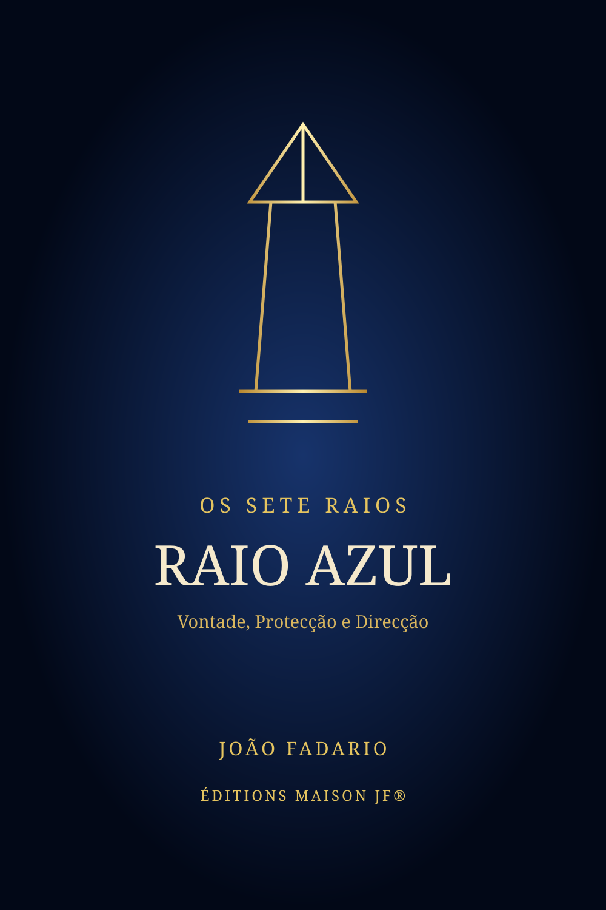

Espiritualidade · Colecção Os Sete Raios · Éditions Maison JF®
Raio Azul
Vontade, Protecção e Direcção.
O primeiro volume da Colecção Os Sete Raios.
3,50 €
Inclui PDF + EPUB · acesso privado após pagamento

Primeiro Raio
Força que alinha. Direcção que clarifica.
O Raio Azul fala de vontade, coragem, protecção, fé, ordem e direcção. Não de força teatral, mas daquela que ajuda a escolher, sustentar e avançar sem fazer guerra à própria vida.
João Fadario aproxima-se das tradições dos Sete Raios com respeito, pensamento crítico, prática e linguagem humana. Este é o primeiro de sete volumes.